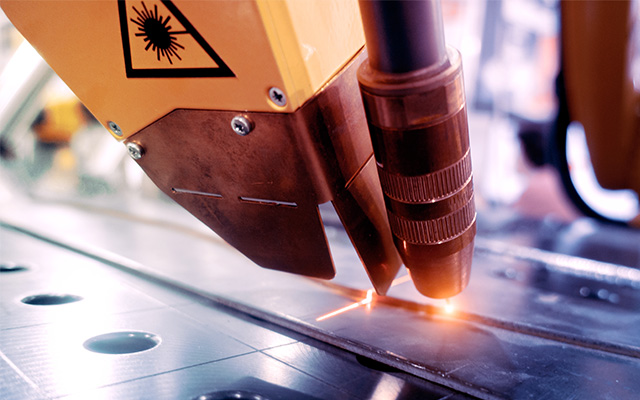
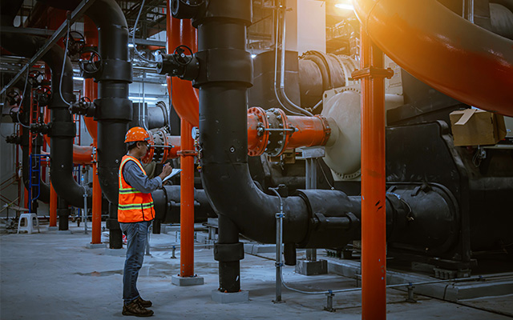
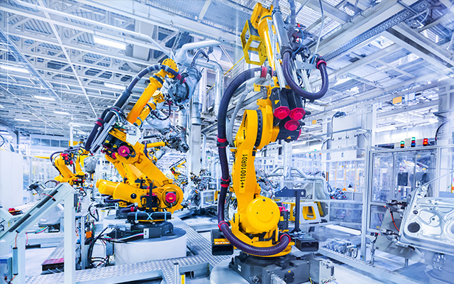

보유 기술
하드웨어와 소프트웨어의 파괴적 혁신을 통해 세계 최고의 기술과 경쟁력을 자랑합니다.
-
- 극지형 아틱드릴십
- 모노코크 형상의 선체 형상과 더불어 이를 바탕으로 구성된 밀폐형 데릭을 가지는 구조로 최소한의 에너지로 선박과 작업자들이 이상 없이 작업할 수 있도록 설계된 해양 시추 선박입니다.
-

- 해상풍력발전기 설치선
- 육상 건조한 해상풍력발전기를 운송·설치함으로써 작업 효율을 높이고 비용을 줄여 해상 풍력단지 개발분야에서 큰 활약을 할 것으로 기대됩니다.
-

- 원자력 추진선
- 기존의 화석 연료를 대체하여 원자력을 추진 동력으로 활용하는 선박입니다. 다양한 선박의 화석연료 엔진을 대체 Mining vessel, Subsea plant 등에서도 동력으로 활용 가능합니다.
-

- 발전플랜트 기술
- 세계 제일의 조선/해양 기술을 기반으로 설계/제작된 발전 설비로써, 일반 육상 발전소 대비 최적화된 Layout 및 설치 지형적 제약에서 자유롭습니다.
-
- 로봇 기술
- 소형/경량의 기구설계, 시스템 통합운영 등의 핵심기술력을 바탕으로 생산성 향상에 필요한 New Business 로봇의 개발적용과 상용화를 추진하고 있습니다.